Introduction
The Workflow Editor is a graphical tool in TACTIC used to interactively create pipelines (workflows). It is a node-based tool which creates processes in a pipeline and connects them. The Workflow Editor makes it easier to create large complex pipelines to filter and process information and file system flow.
The Workflow Editor is simple to use and similar to node base utilities commonly found in other applications. Nodes can be created in the canvas and connected together. Each node represents a process (with attributes associated to it) and each connection represents information being delivered from one process to the other. Together, the Workflow Editor helps you create a definition of the pipeline document and drive much of the information flow in TACTIC.
Access the Workflow Editor
Access the Workflow Editor by going to:
Admin Views → Project Admin → Project Workflow
When the option for "Has Pipeline" is selected during the registration of the sType, this defines a default pipeline for that sType. This pipeline can be found defined in the Workflow Editor in the sidebar under Project Pipelines. To add a new pipeline manually, the select the [+] icon in bottom panel of the Workflow Editor.
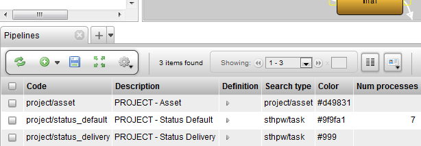
Interface Walk Through
The buttons at the top of the Workflow Editor allow various operations on the canvas:
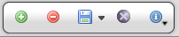
- Create: Creates a new node on the canvas.
- Delete: Deletes the selected node.
- Save: Saves the current state of the pipeline to the database.
- Clear: Clears the canvas.
- Properties: Opens the Node Properties panel.
Edit Properties of a Pipeline
To edit the properties of a pipeline, first select a node in the pipeline and then click on the Edit Properties button on the tool shelf.
Note
For more information regarding the Process Options, refer to the section Project Workflow → Pipeline Process Options
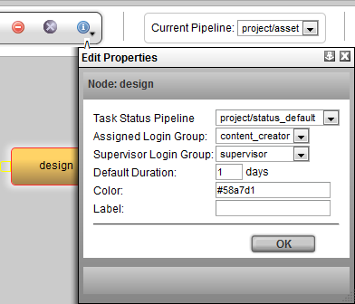
Lay Out a Pipeline
When you click the green plus button, *Create*, a new node will appear on the canvas.
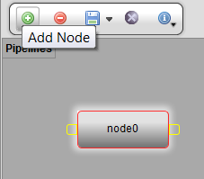
Rename the node: Select the new node and press CTRL-LMB to rename the node. Alternatively, right click and select Rename Node from the context menu.
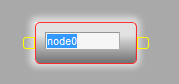
Type in the new name for the node ("Model," in this example), and press Enter.
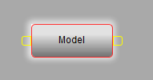
Create another new node (called "Texture" in this example).
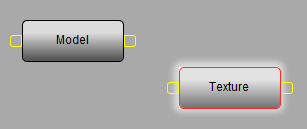
To create a connection between the two nodes, click on the handle on the right side of the "Model" node. This will create a connector which will follow the cursor.
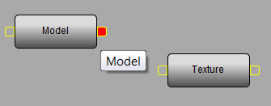
Click on the left handle of the "Texture" node to complete the connection. Now, the 2 nodes are connected together. Once 2 nodes are connected, they will stay connected unless the connector is selected and deleted.
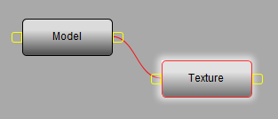
It is also possible to have one node connect to more than one node. In the following example, the "Model" process delivers to both the "Texture" process and a "Rig" process:
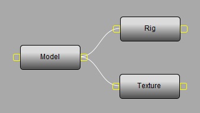
Pipeline Workflow Automation
Repetition and daily components that make up a user’s workflow can be made easier through automation of notifications, file/directory naming and triggering custom logic. Automations such as these can vary from simply sending an email or automatically setting upstream and downstream task statuses to running custom Python scripts and tools to encode files, submit renders, generate previews, deliver files to clients, etc.
On the Workflow Editor’s canvas, right-clicking on a node will bring up the context menu where the automation interfaces can be loaded into the lower half of the interface. These options include:
Show Properties | Loads the Node Properties window. |
Show Triggers/Notifications | Loads the Triggers and Notifications setup Interface |
Show File Naming | Loads the Directory and File naming convention setup Interface |
Note
Each of the menu options are explained in the "Project Automation" section of the documentation.
Mouse and Keyboard Shortcuts
When the cursor is over the canvas in the pipeline editor, the following mouse and keyboard shortcuts are available:
LMB on a node | Select the node |
LMB on the empty canvas space | Clears selection |
LMB + Ctrl click on a node | Edits the name of the node |
LMB + Shift click on a node | Add node to selection |
LMB + drag on a node | Drags the node around the canvas |
LMB + drag on the empty canvas space | Pans around the canvas |
LMB + Shift + drag to form a selection box | Forms a selection box |
LMB + Ctrl + drag to the left or the right | Zooms in or out on the canvas |
DELETE | Deletes the selected node(s) |
To Change Node Color
To change the node color, go to the Workflow Editor → sidebar
right click on the pipeline and select Edit Pipeline Data
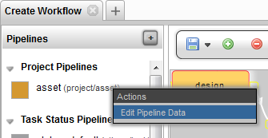
Next, click on the color input field. A color swatch will pop-up. Select the new color for this pipeline from the color swatch.
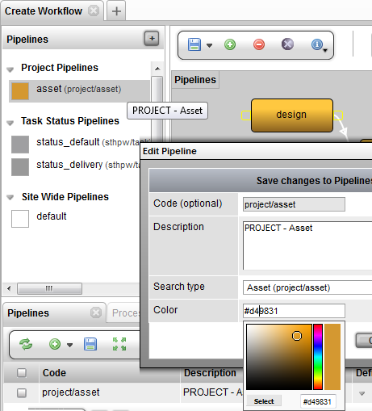
Another way to change the color is in the Workflow Editor → Pipelines tab (panel at the bottom) click on the color column and pick the color from the color swatch.
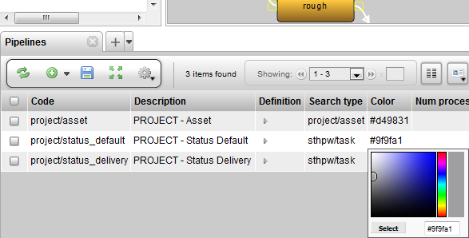
Pipeline Node Context Menu Options
Right click on the pipeline node will display the following menu options:
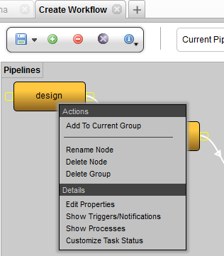
Add To Current Group | Add the selected node to the current group |
Rename Node | Rename the current selected node |
Delete Node | Delete the current selected node |
Delete Group | Delete the group for the current selected node |
Edit Properties | Edit the properties for the current selected node |
Show Triggers/Notifications | Display the triggers and notifications view in the bottom panel |
Show Processes | Display the processes in the bottom panel |
Customize Task Status | Create a custom task status pipeline for the process (refresh the Workflow Editor to see it added to the sidebar) |
Advanced
Behind the scenes, the pipeline is an XML text document. This document is how TACTIC stores its representation of the pipeline structure of nodes and connections.
Although it is rare to need to manually edit the pipeline XML structure, it is available at the bottom of the Workflow Editor in the pipelines table in the Data column.
Below is an example of the pipeline XML for the Model → Rig / Texture pipeline:
<?xml version='1.0' encoding='UTF-8'?> <pipeline scale='100'> <process name='model' ypos='-95' xpos='-138'/> <process name='rig' color='blue' xpos='38' completion='80' task_pipeline='task' ypos='-165'/> <process name='texture' ypos='-51' xpos='42'/> <connect to='rig' from='model'/> <connect to='texture' from='model'/> </pipeline>
-include::../section/doc/tactic-setup/setup/pipeline-process-options/index.txt[]